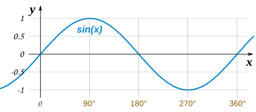
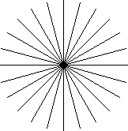
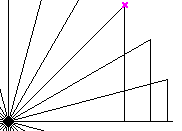
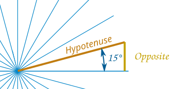

Sine Function - Graph Exercise

The Sine Function produces a very beautiful curve,
but don't take our word for it, make your own!
Sine Function
First, read the page on Sine, Cosine and Tangent.
Now you will know that the sine of any angle is the length of the far side of the triangle (the "opposite") divided by the long side (the "hypotenuse"):

Sine of θ = Opposite / Hypotenuse
Draw Triangles
To make the graph, we need to calculate the sine for different angles, then put those points on a graph, and then "join the dots".
Step 1: Draw the Angled Lines
Place a mark at the center of a piece of paper, then, using a protractor, mark every 15 degrees from 0° to 180° in a semi-circle. Then rotate the protractor and mark from 180° around to the start again. Then draw lines radiating from the center to each of your marks so that you end up with an illustration like this:


Lines at 15° (click to enlarge)
Or, you can click on the above illustration, then print out the result.
Step 2: Draw and Measure the Triangles
From the end of each angled line, draw a line straight down (or up) at right angles to the horizontal center line. This forms a right triangle for each angle:

Measure Triangles
When you have completed each triangle, it is simply a matter of measuring the lines. Remember that the sine is the length of the line opposite the angle divided by the hypotenuse (which should all be the same length if you have drawn it well)

Write all your measurements in a table. This is what I got, but your measurements may be different:
| Angle | Opposite | Hypotenuse | Opposite / Hypotenuse |
| 0° | 0 mm | 86 mm | 0.00 |
| 15° | 22 mm | 86 mm | 0.26 |
| 30° | 43 mm | 86 mm | 0.50 |
| and so on ... | |||
You can print a table ready to fill in here.
Tip: if you have drawn it well, you can take advantage of the symmetry of 0−90, 90−180, 180−270 and 270−360.
Graph The Results
Get some graph paper and prepare it by scaling off 0 to 360 in 15 increments along the x-axis, and scaling off −1 to +1 on the y-axis. You can use your own graph paper, or print out this graph paper
Now plot each point from the table on the graph.
Then join the dots as neatly as you can.
Result
The result should look something like the graph at the very top.
But you have done much more than draw a nice curve. You have :
- learned about one of the most important functions in mathematics
- learned that you don't have to believe what people say - you can try it for yourself
- had experience plotting graphs
- learned how symmetry can save effort
We hope you had a great time exploring!